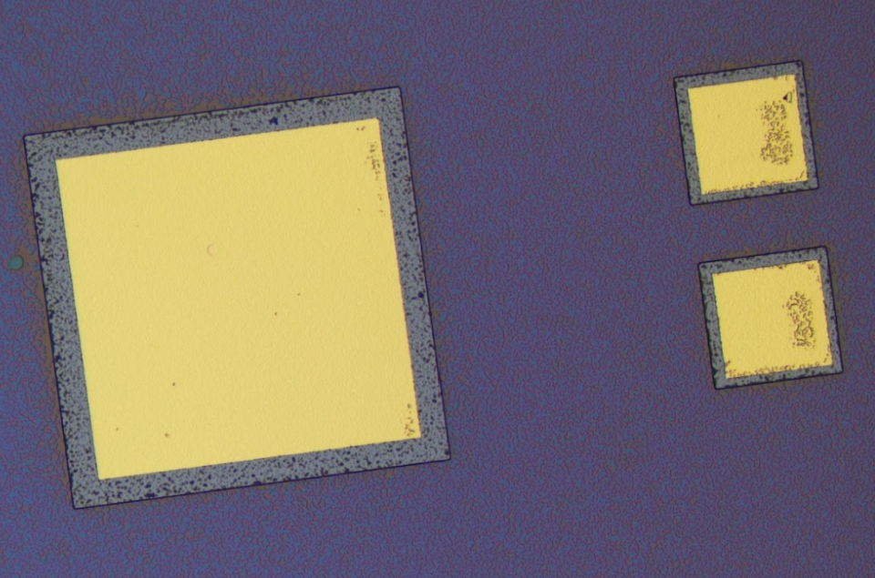

Semiconductor Device Fabrication



Overview
This project covered the complete design-to-characterization cycle for silicon pn-junction diode devices — from laying out geometry in a GDSII editor through every cleanroom process step to final electrical measurement. The goal was to develop hands-on fluency with the full fabrication flow and to quantify process yield using statistical methods.
Design
Device layouts were designed in KLayout, an open-source GDSII editor, and exported as mask files for direct-write lithography. The design included multiple device geometries and test structures to support statistical yield analysis.
Fabrication
All processing was carried out in the Brown University cleanroom:
- Lithography — maskless direct-write exposure on an MLA-150 system, enabling flexible, mask-free patterning at micron resolution
- Wet etching — buffered oxide etch (BOE) for oxide removal prior to implantation
- Thermal processing — furnace annealing at 1000°C to drive in dopants and activate junctions
- Metallization — e-beam physical vapor deposition (PVD) of metal contacts, followed by solvent lift-off
Characterization & yield
Completed devices were characterized electrically using I-V measurements across forward and reverse bias regimes. Diode ideality factors were extracted from the forward-bias exponential region. Statistical Process Control (SPC) was applied to the ideality factor distribution across the wafer to define and measure effective device yield, which came out to 75%.